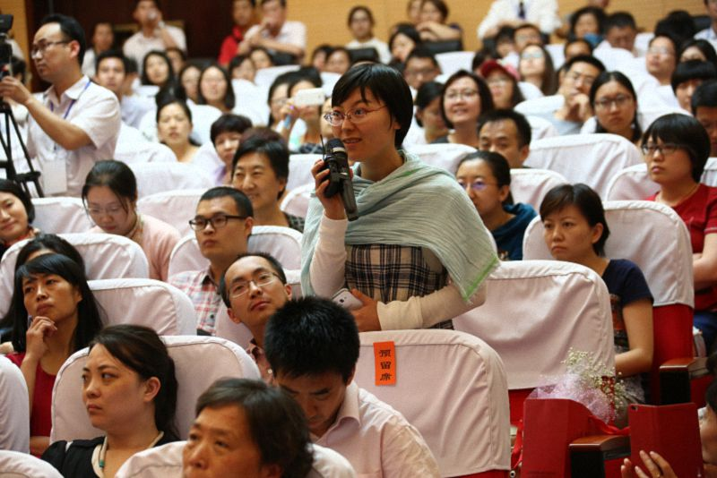

中国中医科学院问答
『2015年6月5日』
（一）问：我是一名佛教徒，学过《药师经》，也有每天该做的功课。但我经常完不成当天的功课，该怎么办呢？
答：佛教徒的确应该每天做一些功课，这是很好的。我的功课比较多，但不论当天再累、事情再多，我都会尽量完成当日的内容，哪怕已经是凌晨一两点钟了，也会坚持。
每个人都要对自己有一点约束，因为放逸、懈怠、散漫的态度不会给生活带来太多意义。做功课是一种很好的训练，但功课应该选择诸佛菩萨加持过的内容，这一点非常重要。所以，当我们在选择每日的功课时，要么用智慧来选择，要么就请具有修证的上师、大德选择。
刚开始做功课时，内容不要安排太多，否则最后可能因为念不完而放弃，这一点也很重要。自己发过的愿，不管经历多少年，最好不要放弃。
从九五年七月份开始，我每天都会念诵一部祈祷文。虽然特别忙时可能会中断，但后面也一定会补上。从我的亲身体验来看，有信仰的人应该坚持每天做一些功课。
（二）问：我是中医科学院针灸研究所的学生。您在讲座中提到了医生要修心，能不能请您再详细地介绍一下，我们该如何修心？
答：一般来讲，医生运用医学知识为病人治疗，但如果医生还信仰佛教的话，也可以念药师佛心咒——“达雅塔 嗡 贝卡贼 贝卡贼 玛哈贝卡贼 绕扎萨摩 嘎得耶索哈”来帮助病人，这同时也能达到修心的目的。
大多数藏医在正式接收病人前，都会念诵十万遍药师佛心咒，令药师佛的加持融入自己的心，从而能够更好地帮助病人。这就像人们在世间建立合作关系时，先要达成共识、培养默契一样。如果我们想和诸佛菩萨结上缘，就要修一定的法，比如念十万遍心咒等等。在这样的基础上再去治病时，只要念几遍心咒或者药师佛的名号——“南无药师琉璃光如来”就可以了。
医生平时都比较忙碌，不一定再有时间修行，尤其是在现代社会里，更是人人都觉得自己特别忙。但事实上，大多数人都不知道自己究竟在忙什么，只是觉得每天都疲惫不堪。按理来讲，我们现在有非常便利的交通工具、快捷的沟通渠道，我们不应该觉得比以前过得还辛苦，但可能恰恰是因为生活越来越便捷、信息越来越多，应接不暇，所以才会感到眼睛酸、身体累。如此说来，这个世界真的是太“忙碌”了，可能只有离开这个世界，才有机会稍事休息。（众笑）其实，我们的身体并没那么忙，忙的是心，但只要我们修心，每个人都可以获得宁静、安乐。
那医生该如何修心呢？作为一个佛教徒，可以通过念诵“南无药师琉璃光如来”修心，这个名号非常重要。对于不信仰佛法的医生来讲，可以通过禅修来修心。美国就有很多医学院提倡禅修，很多医生都通过禅修让心回归宁静，尤其是在为病人诊断前，禅修非常有助于静心。
对医生来讲，静心是很重要的，否则，心烦气躁的情况下，看病也不一定看得准。有时候看到一些医生边发脾气边把脉，我就非常担心会不会误诊。
希望医生们能够通过这些方法，先让心静下来，再为病人诊断、治疗，这样比较可靠，也是一种修行。其实生活中处处都可以这样修行。
（三）问：在座有很多医生都在修行佛法。有人说，作为一个信佛的人，每天应该多花时间念经、磕头，但也有人说，行医本身就是修行菩萨道，医生应该花更多的时间在工作上。我们该如何在有限的时间里平衡念佛和工作呢？
答：有些人认为，修行就是在与世隔绝的地方闭关，但这种修行的力量并不是很强大，更强大的修行力量是将所学的知识、所发的善愿落在实际行动当中。
如果一个医生的心中充满了自私自利，不好好上班，每天只想憋在自己的房间里手捧佛经，不见得就是一名很好的佛教徒。好的修行人可以把佛教的精神运用在生活中。那什么是佛教最重要的精神呢？归根结底就是菩提心，也就是在世间当中利益众生的心，这远比自己念经、禅修更重要。
所以，我一直都认为，自己的修行与利他比较起来，后者更重要。如果你是一名医生，即便没花太多时间念经，而是不忍众生生活在病痛当中，全力以赴地帮助他们，这样的无私奉献已经远远超过了念经或者其他佛教仪式的功德。

（四）问：刚才您提到了业力病的问题，业力病是怎么产生的？该如何进行治疗呢？
答：我们的心都有一个比较深层次的地方叫阿赖耶，一般来讲，善业和恶业全部都储存这里。众生的眼识、耳识、鼻识、舌识、身识、意识都比较粗大，就像大海的波浪一样。业力一般不会存在于这些粗大的心识上，而是储存在比较深层的阿赖耶上，而即使我们的眼、耳、鼻、舌、身、意都灭掉了，但最深层的阿赖耶是不会灭的。
当我们去世时，粗大的心识会灭掉，但细微的心识却会迁移到后世。这时，我们的业力也会随之流转，并很可能在后世体现出来。医生可能都有过这种经验：有些病人的身体看似非常健康，没有四大不调的情况，但是他却病得莫名其妙，这很有可能就是前世业力的体现。
我那天见到一对双胞胎，其中一个身体非常健康，另一个却差得不行。他们的父母百思不得其解：“为什么两个孩子在同样的环境中成长，体质却相差这么大？”当时我就说：“这也许与他们前世的业力有关。”因为不知道他们相不相信前世后世，所以我当时说的是“也许”，但这对双胞胎的例子，值得大家深思。
对每一个人来讲，除了自身的肌肉、骨骼、环境外，还有一种说不清楚的力量，而且每个人的状况都不尽相同。就拿生病来讲，虽然有同样的症状，又接受了同样的治疗，但实际疗效很可能会天差地别。有些人好得特别快，有些人却恢复得非常慢，这也是业力的一种体现。
所以，研究生命的人，不论是医生还是心理学家，都应该对业力有一些认知。当然，有些人把所有的病都归类为业力病，也不太合理，但众生种种不同的疾病，有些的确和前世的业力有一定关系。如果我们能用更客观、更公正的态度来看待这一点，很多事情会有更多的思考空间。
（五）问：您在演讲中提到，有些医生迫于生活，会做出一些不好的事情。我相信绝大多数医生都是很好的，但的确有一部分人的行为不如法，而且医患矛盾也的确越来越多，这是否是医患双方的共业所引起的呢？
答：任何时代、任何群体当中都会有不如法的现象，即使在出世间的佛教团体中，大多数人都非常善良、信仰虔诚，但也免不了出现极个别行为不如法的人。医学界也是如此，但医学界同时也有非常多如法、善良、纯洁的工作者。
从客观的角度来讲，我们在讨论任何现象时，都应具体问题具体分析。我们不能把所有的医患矛盾都简单归结为共业，因为这种事情在不同的时间、环境下都可能发生。其实，大多数医患之间的矛盾都是社会中的个别现象，不能代表所有医患之间的关系。
因为大家现在一味追求经济利益，一些媒体也力求报道博人眼球的内容，而这些内容一旦发表之后，往往会产生放大的效果。于是，人们就真的以为医生和病人之间的关系已经到了如此复杂、恶劣的地步。世界上有许多好医院和好医生，也有很多配合医生治疗的病人，医患之间保持着非常好的关系，但人们却更乐意关注在极个别的现象上。
现在这个时代，一方面特别好，因为正能量可以在短时间内传播到世界各地，但另一方面也不尽如人意，因为一件小小的坏事，很容易就被放大，让人们误以为是普遍现象。比如，一旦媒体曝光了一个医生的非法行为，大家就会觉得这是医生群体的常态。同样的情况也存在于佛教的团体当中。一个出家人的行为不如法，人们就会觉得所有穿袈裟的都是骗子。
这个时代真是奇怪。在以前，如果某地发生一件事情，它就只是当地的一件事，但现在有媒体报道，小事的影响也会非常大，甚至导致人们对某一职业失去信心。
因此，我觉得现在的医患矛盾并不是共业，更不是所有的医生都不值得信任。我相信百分之九十的医患关系都是比较和谐的，部分医生的行为不能代表所有医生，而部分患者的行为也不能代表所有患者。